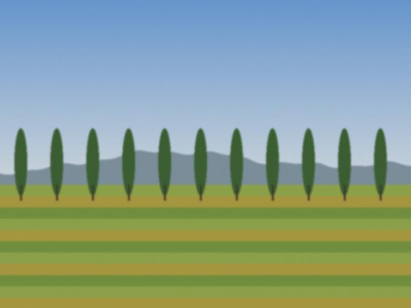
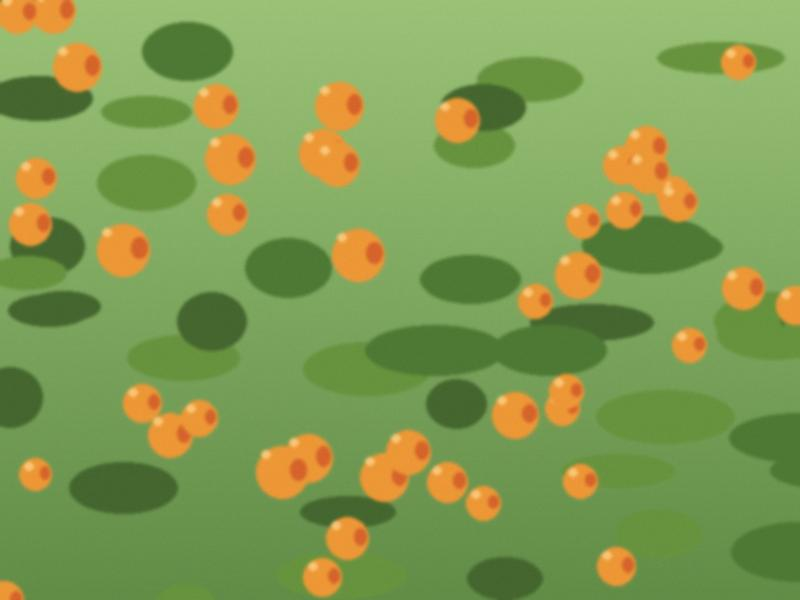

Archive for the ‘budding’ Category
Last apples
The last apples are picked: 41 kilos from the one old tree by the gate, the ones Granny calls "winter", hard as stones until January. The bazaar price is 3 som, so it is not for the money. We store them in the cellar on straw, one layer, not touching.
In December I will bring one to my aunt in Kyzyl-Adyr and she will bring out the tea. That is the whole system. See also Going back in August.
Going back in August

The road into the valley, August 2026.Every August I go home for two weeks. The tree had a heavy year. Granny made jam in the same basin as in 1990. My aunt, retired now, still prints her lessons for an old man in Nurzhan who has no Tulpar and sends them by post.
I sat with Granny and the notebook, finally. The grafting varieties are on their way into Grafting, as my grandfather did it.
The frost of 2008: three replies
Three of you wrote about the old frost note. Summary:
- A man from Sary-Bulak road writes that it was the night of 14 April, minus 5. He remembers because it was the day his daughter was born.
- A retired agronomist in Aulie-Ata says the whole valley lost the apricot, but the walnuts survived.
- My aunt remembers that her pupils came to school with branches in their hands, to show the black flowers.
So it happened, and Granny was right. I will upgrade The frost of 2008 to "budding". Thank you.
Walnuts
Walnuts are shaken down from the tree with a long pole in the last week of September and laid on a sheet in the sun for a week. The green skin is removed with gloves (otherwise the hands are brown for a fortnight, ask me how I know). Granny sells half to the neighbour for 20 som a kilo and keeps half for the winter.
To crack them without a hammer: one in each hand, hold the seam towards the other. Granny does it in a second and I cannot do it at all.
Water turns
In summer the irrigation ditch comes to our street on a schedule: each yard gets the water for a set number of hours, by turn, day or night. The man who keeps the turns is called the mirab. When our turn fell at 3 a.m., Grandfather went out with a shovel and a torch, and so did every neighbour on their night.
The schedule was in a school exercise book. The mirab kept it in his chest pocket for thirty years. Nobody ever argued with the exercise book. See On apricots and patience.
The tree thinks

The blossom on Sunday. Pink in the bud, white when it opens.The tree is in blossom. This is an "on" year, so a heavy crop is expected, and Granny has already counted the bees. Four hives behind the school, she says, a neighbour's; she does not count her own opinion.
Back to On apricots and patience: I now believe the alternate-year story, because I have written down seven years of the yield in a notebook and it matches. Even the numbers do what Granny says.
Jam basin
Granny's jam basin is copper, wide, with two handles, from her mother. It must be scoured with ash and lemon before and never with soap. Jam in it keeps the colour. In a steel pot it goes brown. I have tested both in her kitchen this year, to prove her wrong. I did not prove it.
Apricot and a few kernels, a handful of walnuts for the last ten minutes. Sugar by feeling, not by weight. Notes continue in On apricots and patience.
Grafting, as my grandfather did it
Grandfather grafted in April, with a knife he sharpened on the doorstep and tape from an old cassette. Cleft graft, two scions per branch "in case one is lazy". Half the trees in the yard are his grafts on wild stock from the hills.
Still to write: which variety came from where. Granny remembers; I need to sit with her with a notebook. See On apricots and patience.